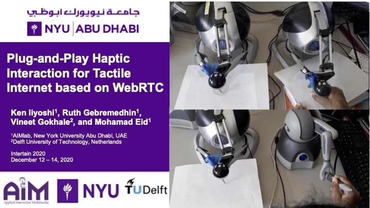
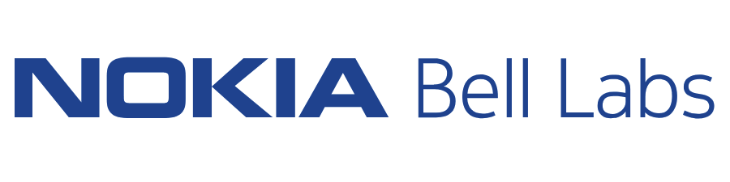
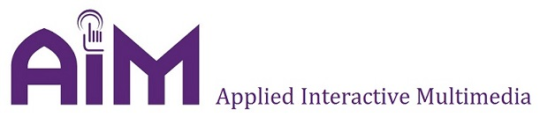
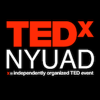
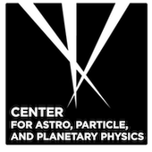

I am a third year Ph.D. candidate in Electrical and Computer Engineering at New York University's Tandon School of Engineering.
I am actively engaged in cutting-edge research as part of the NYU Wireless research center.
My path began with a B.S. in Electrical Engineering from NYU Abu Dhabi and now my focus is
on developing next-generation technologies for the wireless physical layer.
I am also interested in information theory and using machine learning to revolutionize wireless communication.
Recent News
12/2022

We received the best paper award at GlobeCom 2022.
15 best paper awards out of ~1100 total submissions
12/2022

Poster
Slides
08/2022

I received the Outstanding Innovation Award from the Global Student Program at NOKIA.
Top 7% from internal best intern competition, placed 4th
06/2022

I joined Nokia Bell Labs as a Wireless Propagation Modelling Intern.
Radio Research Team - Mentors and Interns
12/2020

Paper
Slides
12/2019

Paper
Bio
Education
Ph.D student in Electrical Engineering | 08/2020 - Present
NYU Tandon SoE Fellowship, Advisor: Prof. Thomas L Marzetta
B.S in Electrical Engineering | 08/2016 - 05/2020
Full Scholarship,
Thesis: Design of a Haptic-Audio-Visual Tele-Dental Training Simulation,
Advisor: Prof. Mohamad Eid
Experience

Wireless Propagation Intern | Summer 2022
Nokia Bell Labs, Murray Hill, NJ, USA.
Graduate Research Assistant | 08/2020 - Present
NYU Wireless Research Center, Brooklyn, NY, USA.
Advisor: Prof. Thomas L Marzetta
ECE Course Assistant | 01/2021 - Present
ECE-GY 6013: Digital Comms with Prof. Sundeep Rangan,
ECE-UY 3404: Fund Comm Theory with Prof. Unnikrishna Pillai

Undergraduate Research Assistant | Summer 2018, 19, 20
Applied Interactive Multimedia Lab, NYU Abu Dhabi, Saadiyat Island, Abu Dhabi, UAE.
Advisor: Prof. Mohamad Eid
ECE Course Assistant | Summer 2018, 2019
ENGR-UH 1000: Computer Programming for Engineers in C++ with Prof. Mohamad Eid

Co-Chair of Executive Board | 08/2017 - 05/2018
NYU Abu Dhabi, Saadiyat Island, Abu Dhabi, UAE.
Watch the 2018 TEDxNYUAD talks.

Undergraduate Research Assistant | Summer 2017
NYU Abu Dhabi, Saadiyat Island, Abu Dhabi, UAE.
Advisor: Prof. Joseph Gelfand
Research
Physics based Wireless Channels
- Thermal Conduction as a Wireless Communication Channel
Ruth Gebremedhin and Thomas L. Marzetta - IEEE GlobeCom 2022 (forthcoming).
Haptics and Teleoperation
- Plug-and-Play Haptic Interaction for Tactile Internet based on WebRTC
Iiyoshi, Ken, Ruth Gebremedhin, Vineet Gokhale, and Mohamad Eid - EAI INTETAIN 2020.
- Effects of tactile textures on preference in visuo-tactile exploration
Park, Wanjoo, Muhammad Hassan Jamil, Ruth Ghidey Gebremedhin, and Mohamad Eid - ACM TAP 2021.
- Towards standardization of haptic handshake for tactile internet: a WebRTC-based implementation
Iiyoshi, Ken, Mahrukh Tauseef, Ruth Gebremedhin, Vineet Gokhale, and Mohamad Eid - IEEE HAVE 2019.


{kind=link}